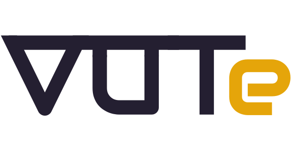
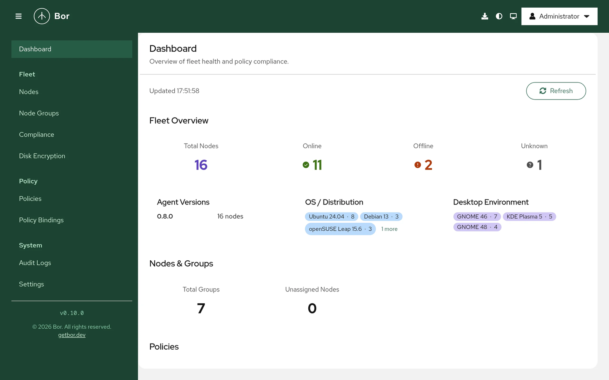
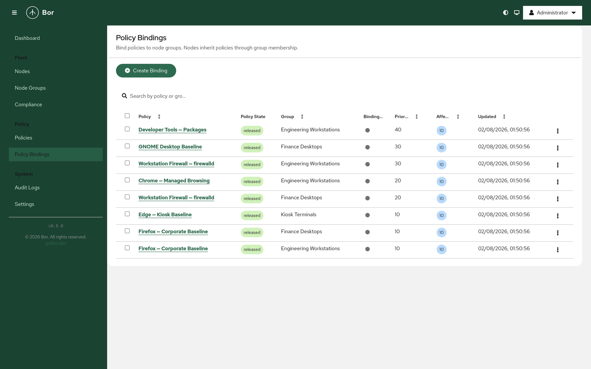
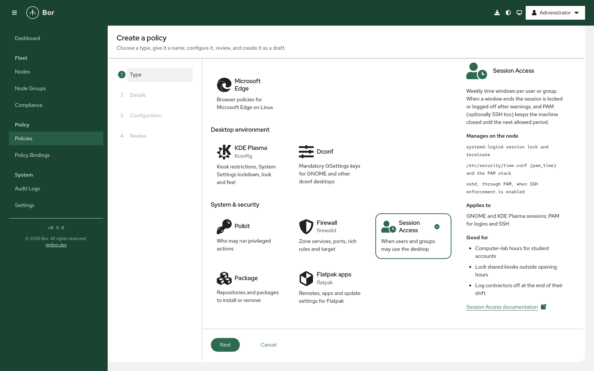
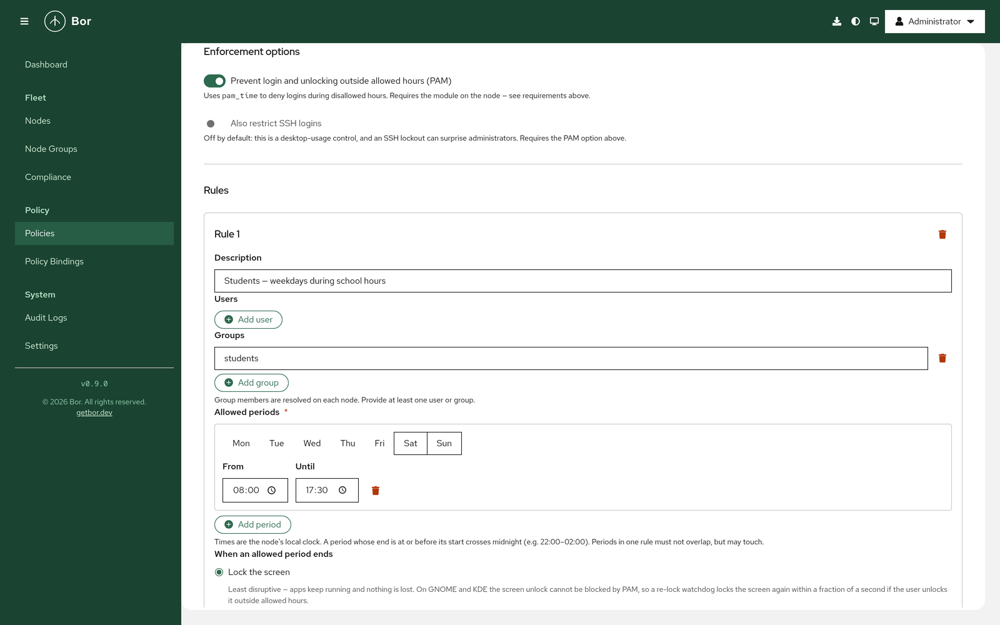
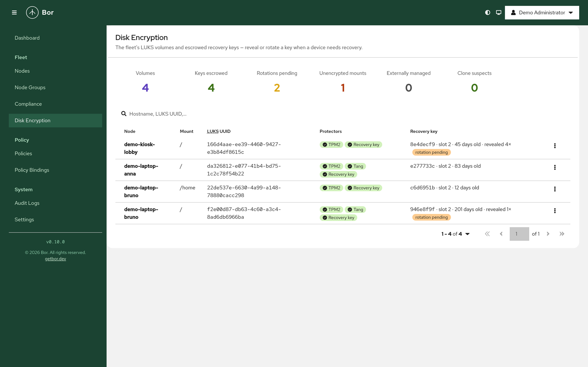
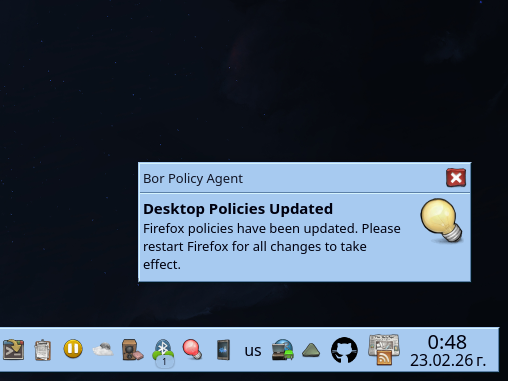
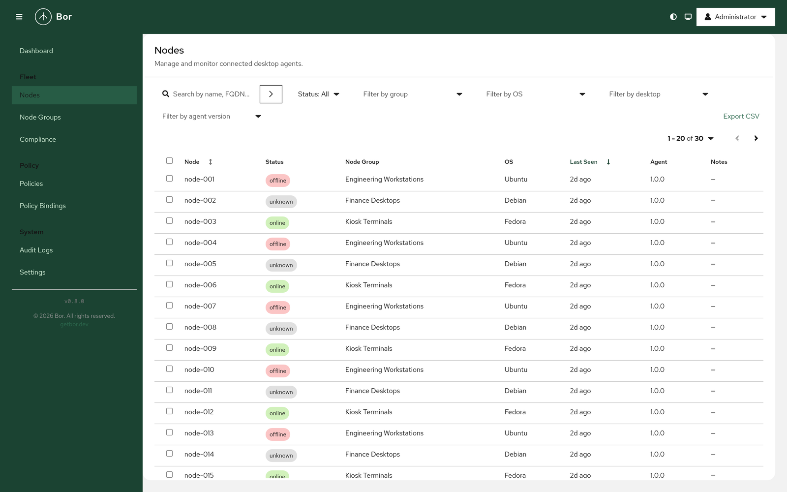

Open source, self-hosted, real-time.
Blagovest Petrov · Founder, Vute.Tech

2027 is the year of the Linux desktop. (Yes, really?)
But are we ready to welcome it?
14.10.2025
Windows 10 reached end of support.
"Great, we're moving to Linux!
... so how do we manage all these machines?"every IT director, about a week after the decision
What it is and how it works.
Policy management for Linux desktops. Think Group Policy, built Linux-first.
Linux-firstSelf-hostedOpen source · AGPL-3.0Air-gapped capable
"For me, Bor is the one that comes closest to Windows GPOs, and the one with the most potential." Karl Certa, syspirit.fr, 6 August 2026
Бор. „Прекрасно българско трибуквие.“ The Slavic word for pine.
Search for getbor.dev. Searching for "бор" alone gets you lumber prices.

bor-agent --token ...: the agent generates an ECDSA P-256 key locally and a CSR./var/lib/bor/agent. From here on: mTLS.| Agent | Server | |
|---|---|---|
| connects with mTLS and states its last known revision | --> | SubscribePolicyUpdates(rev) |
| receives a SNAPSHOT (new agent, or revision too old) | <-- | all current policies + end-of-snapshot marker |
| applies atomically, reports compliance | --> | stored per node and per policy |
| ... the stream stays open ... | ||
| an admin releases a policy or changes a binding | ||
| receives only the delta: CREATED / UPDATED / DELETED | <-- | PolicyHub broadcasts to every connected agent |
| applies, notifies the user, reports again | --> | dashboard updates |


Every type uses the application's official system-wide mechanism: no patched binaries, no LD_PRELOAD. The configuration keeps working even if the agent is stopped. Product marks belong to their respective owners.
Firefox, Thunderbird, Chrome / Chromium, Microsoft Edge
/etc/xdg, immutable keys, KDE Action Restrictions, System Settings module lockdown, look and feel, settings scoped per Unix groupWorks on X11 and Wayland alike: it is files, dconf and logind, not the display server.
rules.d with user, group and variable conditions. The classic: non-IT users cannot mount removable drives; developers get it back via a higher-priority binding.flathub remotes are adopted, not duplicated."Could Bor enforce screen time on laptops given to children, better than iOS and Android do?" Three weeks later it shipped in v0.9.0.
pam-auth-update on Debian and Ubuntu; a documented one-time step on authselect systems
Computer-lab hours, shared kiosks outside opening hours, contractors at end of shift.
bor-agent luks adopt
Fleet view: volumes, keys escrowed, rotations pending, unencrypted mounts, externally managed, clone suspects.
dnf-automatic, unattended-upgrades, Zypper, and transactional-update on MicroOS, Aeon, Kalpa and SLE Microsystemd:exec permissionsetenforce 0 is revertedCompliance items for these types carry CIS benchmark control numbers, and policies need the mac:author / mac:operate permissions.
sudo opens policies.json and changes the homepagetime.conf, Flatpak remotes, systemd drop-ins and tasks

/metrics on its own port, loopback by default, optional bearer token and TLSpolicy:release, systemd:exec, mac:author, report:view, ...| Role | Algorithm | Lifetime |
|---|---|---|
| Internal CA | ECDSA P-384 | 10 years |
| Server certificate | ECDSA P-256, or ACME / Let's Encrypt | 365 days |
| Agent client certificate | ECDSA P-256 | 90 days, auto-renewed |
os.Root-scoped treepodman-compose up -d, deb/rpm with a systemd unit, container image (UBI, non-root, read-only FS), Helm chart/var/lib/bor/pki; restart-safe state# /etc/bor/config.yaml on the node
server:
address: "bor.example.org:8443"
# then: bor-agent --token <ONE-TIME TOKEN> && systemctl enable --now bor-agentapiVersion: bor.dev/v1
kind: Policy
metadata:
name: firefox-corporate-baseline
displayName: Firefox - Corporate Baseline
spec:
type: Firefox
content:
DisablePocket: true
Homepage:
Locked: true
StartPage: homepage
URL: https://intranet.example.com
---
apiVersion: bor.dev/v1
kind: PolicyBinding
metadata:
name: firefox-corporate-baseline-finance
spec:
policy: firefox-corporate-baseline
group: Finance Desktops
priority: 10Licence, what comes next, and a demo.
| Community | Enterprise |
|---|---|
| All 16 policy types | SSO: OIDC and SAML 2.0 |
| PKI, HSM, Kerberos, LDAP / AD | SCIM 2.0 provisioning |
| MFA, RBAC, audit, metrics | Node-group-scoped roles |
| LUKS recovery-key escrow | Compliance reports with history and signed PDFs |
| Export / import, deploy wizard | Support from the people who build it |
policies.json by hand. It comes back at once; the tamper event is in the audit log.setenforce 0 reverted, Session Access, or a package install.AGPL-3.0 · © 2026 Vute Tech LTD and contributors · blago.petrov@vute.tech · bor@vute.tech
Blagovest Petrov · Founder, Vute.Tech · blago.petrov@vute.tech · getbor.dev
Take the demo policies home: dev.vute.tech/Conferences/OpenFest2026-Bor-Policies
War stories about managing Linux machines are welcome too.